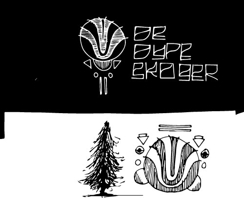

<!DOCTYPE html>
<html>
  <head>
    <title>DE DYPE SKOGER</title>
    <link rel="stylesheet" type="text/css" href="style.css" />
  </head>
  <body>
    <link rel="preconnect" href="https://fonts.gstatic.com">
    <link href="https://fonts.googleapis.com/css2?family=Amatic+SC&display=swap" rel="stylesheet">
    <script src="https://unpkg.com/css-doodle@0.8.5/css-doodle.min.js"></script>
    <script src="/lotek1/out/main.js"></script>

  <!--  <header>
       <center> DE // DYPE // SKOGER // </center>
    </header>
<main>
    <css-doodle class="dot">
:doodle {
  @grid: 10 / 100vmax;
  background: #fefefe;
}
--bg: #000;
background: linear-gradient(
  @rand(360deg),
  @var(--bg) 50%, transparent 50%
);
</css-doodle>

</main> -->
<footer>
  <center</center>
</footer>


  </body>
</html>
